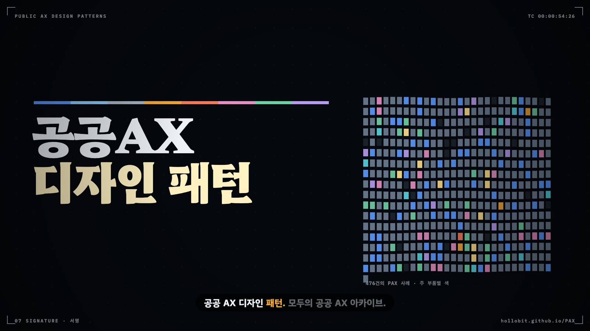

PAX 가이드라인과 리소스
모두의 공공AX 사례 아카이브(PAX)는 사례 목록 하나로 끝나지 않는다. 사례 원장 위에 4축 평가, MCP 보안 검증, 전이 플레이북, 관측소, 격차 지도, 부처 안내서 목록이 겹겹이 얹혀 있다. 페이지마다 무엇이 있고 어떤 규칙으로 만들어지는지, 기관 AX 담당자와 공직 개발자와 평가자가 그것을 실제로 어떻게 쓰는지 정리한다.
- PAX 사이트의 페이지들이 사례 원장, 4축 평가, 판정 기준을 중심으로 어떻게 엮이는지 설명한다
- 사례 수록 기준과 익명화 원칙, 결정적 병합 게이트가 공개 데이터의 성격을 어떻게 정하는지 이해한다
- AX 성숙도 판정, MCP 6축 검증, 전이 플레이북 자가진단의 규칙을 자기 기관의 도구에 적용한다
- 관측소와 격차 지도의 지표를 자기선택 표본이라는 한계 안에서 읽고, 미확인을 아니오로 바꿔 읽지 않는다
- 부처 안내서 목록을 사업 단계별 요구사항으로 옮기고, 각 리소스를 이 책의 장과 패턴에 연결한다
- 공공AX 패턴 성좌와 패턴 디렉터리를 책의 프로필과 오가며 부품의 실제 사용 사례를 찾는다
행정망 PC 앞에서 한 주무관이 묻는다. 공개 저장소에서 법령 조회 MCP 서버를 하나 찾았는데, 이걸 업무에 써도 되느냐는 질문이다. 정보화 부서는 보안성 검토 서식을 내밀고, 감사 부서는 다른 기관도 쓰느냐고 되묻는다. 주무관에게 필요한 것은 세 가지 답이다. 이 도구가 어떤 권한을 쓰고 어디로 데이터를 보내는지, 비슷한 도구를 이미 공식화한 기관이 있는지, 그 기관은 어떤 절차를 밟았는지.
모두의 공공AX 사례 아카이브(PAX, https://hollobit.github.io/PAX/)는 이 세 가지 답을 한곳에 모아 둔 민간 관측 사이트다. 사례 원장이 중심에 있고, 그 위에 4축 평가와 MCP 검증, 전이 플레이북, 관측소, 격차 지도, 부처 안내서 목록이 얹혀 있다. 이 장의 수치는 모두 사이트 데이터 파일에서 직접 센 것이며, 기준일은 사례 원장이 마지막으로 갱신된 2026년 10월 13일이다. 그날 원장에는 사례 557건이 있었다.
PAX는 카카오톡 오픈채팅과 Threads에 자발적으로 공유된 사례만 모은 자기선택 표본이다. 그래서 사이트의 수치는 전국 공공부문의 통계로 쓰지 않는다. 공직 현장에서 무엇이 만들어지고 어디서 막히는지를 보여 주는 관측 기록으로 읽는다.
17.1 사례 원장과 수록 기준
PAX의 모든 페이지는 data/cases.json 한 파일에서 출발한다. 이 원장은 추가만 하는 장부(append-only)다. 사례를 손으로 지우거나 고쳐 쓰지 않고, 필드 보강만 기록을 남겨 반영한다. 2026년 10월 13일 기준 557건 가운데 512건이 오픈채팅 "공공AX 네트워크"에서, 45건이 Threads의 공공AX 태그에서 왔다.
수집은 하루 세 번(07:00·15:00·23:00) 돈다. 원문을 읽고 공공AX 사례인지 가려 요약을 새로 쓰는 일은 AI 세션이 절차서(scripts/collect_prompt.md)를 따라 한다. 그 결과를 원장에 넣는 일은 결정적 스크립트가 맡는다. 병합 게이트는 스키마, 익명화 화이트리스트, 중복을 차례로 검사하고, 하나라도 걸리면 그 건을 거부 폴더로 보낸다. 세션은 거부된 건을 고쳐 한 번만 다시 시도한다. AI의 판단은 회차마다 달라질 수 있어도 공개 데이터 앞의 마지막 관문은 늘 같은 코드다. 그림 17.1이 이 흐름이다.
무엇을 사례로 받는지는 절차서 4절이 정한다. 표 17.1이 그 기준이다. 세 범주 가운데 하나에 들면 받고, 실체 링크가 없는 소식은 받지 않는다. 받은 사례에는 기관 유형 10분류와 업무 분류 10종이 붙는다. 원장의 사례 성격으로 보면 개인 개발이 333건, 커뮤니티 산출물이 104건, 기관 공식이 54건, 민간·해외 참고 사례가 66건이다. 공직자 한 사람이 자기 업무를 줄이려고 만든 도구가 이 아카이브의 저변이다.
| 구분 | 기준 | 원장에 남는 것 |
|---|---|---|
| 수록 (a) | 특정 공공기관(중앙부처·지자체·공공기관·교육기관)이 AI를 도입·시범 운영·계획한 구체적 내용이 있는 글 | 기관명, 기관 유형 |
| 수록 (b) | 공직 실무자나 커뮤니티가 공공 업무를 위해 직접 개발·활용한 AI 도구와 자동화 | 기관이 드러나지 않으면 "공직 현장(개인 개발)"이나 "공직 커뮤니티" |
| 수록 (c) | 웹 서비스·저장소·배포 도구처럼 개발물의 링크가 공유된 사례. 짧은 소개 글이어도 받는다 | 공개 URL. GitHub와 공공 깃랩에 모두 있으면 두 주소를 병기 |
| 제외 | 일반 뉴스 링크만 있는 글, 세미나·강의 홍보, 잡담, 의견·질문, 민간기업 사례, 본인 개발이 아닌 타사 도구 추천, 실체 링크 없는 인사·발령·모임 후기 | 남지 않는다 |
| 익명화 | 요약은 AI가 다시 쓴 문장만. 닉네임·인용부호·연락처 금지. 오픈채팅 원문은 저장소에도 올리지 않는다 | 재작성 요약, Threads는 원문 링크 |
| 값이 불확실할 때 | 지역, 실행 환경, 망 요건은 본문에서 확인될 때만 적는다 | 빈칸(사이트에서는 미확인) |
마지막 줄이 PAX 데이터를 읽는 열쇠다. 557건 가운데 망 요건이 적힌 사례는 199건뿐이다. 나머지 358건은 게시물에 망 요건이 적히지 않았을 뿐이고, 폐쇄망에서 돌지 않는다고 읽을 근거는 없다. 사이트는 이 빈칸을 끝까지 미확인으로 표시한다. 15장의 태깅 규칙이 환경 조건을 모르면 미확인으로 남기라고 한 것과 같은 원칙이다.
17.2 리소스 지도
사이트 상단 메뉴에는 열세 개 페이지가 있다. 그림 17.2처럼 세 묶음으로 나누면 길이 보인다. 왼쪽 묶음은 원장을 그대로 보여 주는 기록 페이지다. 가운데 묶음은 원장 위에 평가를 씌워 숫자로 바꾼 측정 페이지다. 오른쪽 묶음은 판정 기준과 절차, 외부 문서를 모은 길잡이 페이지다. 길잡이의 판정 기준이 가운데 평가를 정하고, 평가 결과는 다시 왼쪽의 사례 페이지에 붙는다.
표 17.2는 페이지별 주소와 용도, 갱신 주기, 주 독자를 한 장에 모은 것이다. 갱신 주기는 수집 절차서를 따랐다. 평가, MCP 공개본, 챔피언, 사례 페이지, 뉴스, 지수는 수집 회차마다 다시 만들어지고, 링크 생존 점검과 MCP 취약점(CVE) 재검은 매주 월요일에 돈다.
| 페이지 | 주소 | 용도 | 갱신 주기 | 주 독자 |
|---|---|---|---|---|
| 사례 아카이브 | / | 사례 검색·필터·북마크, CSV·PDF 내보내기, 딥링크 | 수집 회차마다(하루 세 번) | 공직 개발자, AX 담당자 |
| 사례 페이지 | case/<id>.html | 사례 한 건의 상세 정보, 4축 평가, 실무 도입 카드. 인용용 고정 주소 | 수집 회차마다 | 모든 독자 |
| AX 성숙도 개념 | ax-maturity-infographic.html | 네 단계의 관문, S·C·M 눈금자, 자가 판정 질문, 설계 원칙 여섯 가지 | 평가 모형 개정 시(현행 2026-08-08) | AX 담당자, 평가자 |
| AX 평가 대시보드 | dashboard.html | 평가 방법론, 단계·S·C·M·E 분포, 사례별 판정 근거 | 수집 회차마다 | 평가자, AX 담당자 |
| 전이 플레이북 | playbook.html | 개인 도구가 기관 공식으로 가는 세 경로, 수용 4단계 체크리스트, 6문항 자가진단 | 비정기(자가진단의 유사 사례는 회차마다) | 공직 개발자 |
| MCP 검증 | mcp-review.html | MCP 사례 92건의 6축 보안·안전 검증 매트릭스 | 등재 시 1회, CVE는 매주 재검 | 정보보호 담당, 공직 개발자 |
| 관측소 | observatory.html | 분기 지수, 커뮤니티 활력, 데이터 도메인별 MCP, 모델·저장소·라이선스 현황 | 회차마다, 분기 말 스냅숏 고정 | 정책 담당, 평가자 |
| 격차 지도 | gap-map.html | 중앙행정기관·광역시도별 관측 현황, 레거시 연동 수요 | 회차마다 | 정책 담당, 지자체 AX 담당자 |
| 챔피언 | champions.html | 공개 프로필 기반 개발자 226명 디렉터리 | 회차마다 | AX 담당자(사람 찾기) |
| 3D PAX | pax3d.html | 미니어처 지도 위의 사례 탐색, 여섯 광역 도시 입체 지도 | 회차마다 | 일반 독자, 교육·발표 |
| 안내서·가이드라인 | guidelines.html | 중앙부처·국가기관 공개 안내서 통합 목록과 사업 단계별 적용 조합 | 비정기(현행 2026-08-07 기준) | 사업 담당, 정보보호 담당 |
| 공유 뉴스·동영상 | news.html · videos.html | 커뮤니티에 공유된 기사 917건, 영상 102건 | 회차마다 | 모든 독자 |
| 변경 기록 | changelog.html | 일자별 사례 추가와 기능 변경 이력 | 신규 병합 시 | 재방문 독자 |
| llms.txt | llms.txt | AI 도구를 위한 데이터 주소와 이용 조건 | 구조 변경 시 | AI 도구, 연구자 |
17.3 사례 아카이브와 사례 페이지
아카이브 첫 화면
첫 화면은 카드, 목록, 태그 세 가지 보기를 준다. 검색창 옆에 기관 유형, 출처, 업무 분류, 데이터 분야, 지역, 중앙부처 필터가 있다. "설치 없이 바로 쓰기"를 켜면 브라우저만으로 돌아가는 도구만 남는다. 원장 기준으로 실행 환경이 "브라우저만"인 사례가 176건이다. 16장의 195건은 패턴 태깅의 런타임 환경으로 센 값이다. 원장에 실행 환경이 비어 있던 21건을 태깅이 공개 자료로 채웠기 때문에 더 많다. 행정망 PC에 프로그램을 깔 수 없는 공무원에게 가장 쓸모 있는 필터다.
화면 상태는 모두 주소창에 들어간다. 검색어는 q, 기관 유형은 type, 업무 분류는 task, 설치 불필요는 ni=1, 특정 사례는 case 매개변수로 남는다. 필터를 맞춘 화면의 주소를 그대로 보내면 받는 사람도 같은 화면을 본다. 북마크는 브라우저에 저장되고, 북마크한 사례만 모아 CSV나 PDF로 내보낸다. 내부 검토 회의에 유사 사례 목록을 붙일 때 이 기능을 쓴다.
사례 한 건의 페이지
사례마다 case/<id>.html 정적 페이지가 하나씩, 모두 557쪽 만들어진다. 그림 17.3은 그 구성이다. 머리에는 기관·사례 성격·업무 분류·게시일과 재작성 요약이 있다. 그 아래 링크 줄에 사례 대상 바로가기, 공유 링크, MCP 검증 배지가 붙는다. 상세 정보 칸은 출처 채널, 수집일, 태그, 실행 환경, AI 모델, 라이선스와 확인일, 저장소 별점과 유지보수 상태, 링크 점검일을 보여 준다. 개발자 칸은 챔피언 디렉터리와 같은 공개 프로필 자료를 쓴다.
이 페이지에서 가장 실무적인 칸은 아래쪽의 실무 도입 카드다. 필요한 것(실행 환경과 라이선스), 첫 세 단계, 주의사항을 짧게 적는다. 주의사항은 원장 값에서 나온다. 저장소가 방치 상태면 그렇다고 쓰고, 실사용 피드백이 미확인이면 소규모 검증부터 하라고 쓴다. 출처가 확인된 성과 수치만 믿으라는 문장은 모든 카드에 있다. 다른 기관 사례의 숫자를 자기 사업계획서의 기대 효과로 옮겨 적는 일이 X15빌린 성과표다. 카드의 그 한 줄은 이 함정을 막으려고 넣은 것이다.
기계가 읽는 입구: llms.txt
사이트 뿌리의 llms.txt는 AI 도구를 위한 안내문이다. 사례 데이터(data/cases.json), 평가 데이터(data/evaluations.json), 챔피언 데이터, 변경 기록, 분기 지수 원데이터(data/index.json)의 주소를 적고, 이용 조건 세 가지를 밝힌다. 개별 사례는 딥링크나 사례 페이지 주소로 인용한다. 출처는 "모두의 공공AX 사례 아카이브(PAX)"로 적는다. 미확인 항목을 사실로 바꿔 쓰지 않는다. 기관이 자체 RAG나 MCP 서버에 PAX 데이터를 넣는다면 세 번째 조건을 시스템 프롬프트에 그대로 옮겨 둔다.
17.4 AX 성숙도 개념과 평가 대시보드
2장에서 다룬 AX 성숙도 모형은 PAX 사이트의 두 페이지에 실려 있다. 인포그래픽 페이지(AX 성숙도 개념)는 모형을 한 장으로 요약하고, AX 평가 대시보드는 그 모형으로 557건을 판정한 결과를 보여 준다. 두 페이지가 공유하는 판정 원칙은 셋이다. 첫째, 관문은 합산되지 않는다. 총점이 높아도 필수 항목 하나가 비면 그 단계는 성립하지 않는다. 둘째, 근거가 없으면 아니오 대신 미확인으로 적고 상위 단계 판정을 보류한다. 셋째, 단계와 운영 여부는 별개다. 운영 중인 AI-Ready도 있고 시제품인 AI-Enabled도 있다.
인포그래픽이 정해 둔 것
인포그래픽은 일곱 개 절로 되어 있다. 네 단계의 정의와 필수 관문, 미달 판정, AI를 끄면 무슨 일이 일어나는지가 첫 절이다. 두 번째 절은 업무 범위 S1~S5, 업무 완결성 C0~C5, MCP 사례에만 쓰는 실행계층 파급력 M1~M5 세 눈금자다. 세 번째 절은 설계 요소 열두 개가 어느 단계부터 필수인지를 표로 보여 준다. 네 번째 절이 자가 판정 질문 여섯 개다. 위에서부터 차례로 답하다가 처음 아니오가 나온 곳이 현재 위치다.
- 데이터·권한·책임·기준선 가운데 하나라도 실제로 붙여 쓸 수 있게 정리되어 있는가. 아니오면 미착수.
- AI가 만든 업무 산출물이 있고, 맞고 틀림을 확인할 수 있는가. 아니오면 AI-Ready.
- 그 결과 때문에 일의 시작점과 담당 역할이 실제로 바뀌었는가. 아니오면 AI-Enabled.
- 자동 처리·숙련자 이관·롤백이 실제로 작동한 운영 기록이 있는가. 아니오면 AI-Enabled이면서 First 후보.
- 쌓인 지표가 판정 기준이나 자동화 범위를 실제로 바꾸고 있는가. 아니오면 AI-First.
- 모델이 멈추거나 품질이 떨어져도 핵심 기능이 유지되는가. 아니오면 AI-First. 예면 AI-Native이고, 적용 범위를 함께 기록한다.
다섯 번째 절은 지자체 보조금 심사 한 가지 업무를 네 단계 버전으로 다시 그린 예시다. 여섯 번째 절은 AI-Native를 가르는 강등 경로다. 모델이나 API가 멈추면 대체 모델로, 그다음 규칙 기반 처리로, 마지막에 수동 처리로 내려가되 접수와 통지는 끊기지 않아야 한다. 마지막 절이 설계 원칙 여섯 가지(AIM01~AIM06)다. 원칙마다 확인 질문이 하나씩 붙어 있어 회의에서 그대로 쓰기 좋다. 표 17.3은 그 질문을 이 책의 운영 부품과 짝지은 것이다.
| 원칙 | 확인 질문(인포그래픽 원문 취지) | 답이 없을 때 끼울 부품 |
|---|---|---|
| AIM01 결과가 아니라 종료를 설계 | 이 건이 끝났다는 것을 시스템이 어떻게 아는가 | C3상태 머신·롤백, F11진행 상태·핸드오프 안내 |
| AIM02 예외 경로를 먼저 | 잘못 처리된 건을 누가 어떤 절차로 되돌리는가 | C3상태 머신·롤백, C1검토 큐 |
| AIM03 위험도로 분기 | 자동으로 넘길 건과 사람에게 보낼 건의 경계는 무엇인가 | C2위험도 라우터 |
| AIM04 처리마다 흔적 | 지난달 수정률을 지금 숫자로 말할 수 있는가 | C4감사 로그·지표 |
| AIM05 모델 하나에 묶지 않기 | 오늘 그 모델이 멈추면 무슨 일이 일어나는가 | C7폴백 스위치. 함정은 X4단일 모델 인질 |
| AIM06 결과가 기준을 고치게 | 지난 분기 지표 때문에 바뀐 규칙이 하나라도 있는가 | C6환류 파이프라인, C9평가 세트·회귀시험 |
인포그래픽은 자주 나오는 미달 사례 여섯 가지도 적어 두었다. 그 가운데 셋이 이 책의 안티패턴과 바로 이어진다. 화면에 AI 버튼만 붙이고 흐름은 그대로 둔 경우는 X1AI 스티커, 시연 영상만 있고 운영 지표가 없는 경우는 X6데모웨어, 도구 개수만 늘고 업무 결과로 이어지지 않은 경우는 X8MCP 서버 개수 세기다. 평가자는 인포그래픽의 문장을 지적 근거로, 14장의 안티패턴 프로필을 처방 근거로 쓴다.
대시보드가 보여 주는 557건
대시보드는 방법론, 눈금자 표, 아홉 단계 판정 절차, 분석 요약, 개선 방향, 사례별 평가표로 이어진다. 판정 절차의 마지막 두 단계가 이 사이트의 성격을 정한다. 공개 근거가 없으면 미확인으로 기록하고 상위 단계 판정을 유보한다. 새 증거가 생기면 같은 사례를 새 버전으로 다시 평가한다. 평가표의 행을 누르면 도입 상태, 판정 근거, 피드백 구조, 복원력 평가가 펼쳐지고, 단계가 바뀐 사례에는 이전 단계가 함께 적힌다.
그림 17.4는 평가 데이터(data/evaluations.json, 2026-10-13)의 단계와 완결성 분포다. 557건 가운데 358건(64.3%)이 AI-Ready, 168건(30.2%)이 AI-Enabled다. AI-First는 다섯 건이고, AI-Native는 계획 단계로 판정된 사업 한 건뿐이다. 참고 자료와 해외 동향처럼 단계 판정 대상이 아닌 사례가 25건이다. 완결성은 C1(결과 제공)이 309건으로 가장 많고, 운영 폐쇄루프인 C3에 이른 사례는 한 건이다. 직원이 직접 만든 도구 여섯 종을 전 직원 업무에 투입하면서 관리 원칙을 공표한 광진구 사례다. 이 사례의 First 판정도 공표된 관리 원칙에 기댄 잠정 충족이다.
대시보드는 이 분포를 근거로 개선 방향 네 가지를 적었다. 첫째, C2까지 온 사례를 First 후보군으로 관리한다. 둘째, 성과 근거를 증거 등급 E4 이상으로 올린다. 현재 E0~E3에 모든 사례가 있고, E1(코드·도구 확인)이 391건으로 가장 많다. 셋째, 예외 처리와 복원력을 사례 설명의 필수 항목으로 만든다. 승인 게이트 서술은 557건 전부 미확인이고, 피드백 구조는 77.2%가 미확인이다. 넷째, 도구 개수보다 공개 → 실제 사용 → 업무 결과 → 공식 편입 → 흐름 재설계 → 학습·복원의 진행을 사례별로 추적한다.
평가자는 검토할 사업과 같은 업무 분류, 같은 S·C 좌표의 PAX 사례를 평가표에서 찾아 판정 근거를 읽는다. 같은 좌표의 사례가 왜 Enabled에 머물렀는지 알면, 검토 대상 사업이 First를 주장할 때 무엇을 요구할지가 분명해진다.
17.5 전이 플레이북
공직자가 만든 도구가 기관의 공식 도구가 되기까지 무엇을 거치는가. 전이 플레이북은 이 질문 하나를 다룬다. 페이지는 검증된 전이 경로 세 가지로 시작한다(그림 17.5 위). 수용은 기관이 개인 도구를 공식화하는 길이고, 보안성 검토 → 품의 → 배포 → (선택) 의무화 순서를 밟는다. 광진구가 직원 개발 도구 여섯 종을 전 직원 업무에 투입한 것이 이 길이다. 탑재는 범정부 AI 공통기반 같은 배포 인프라에 도구를 올리는 길이다. 플레이북은 공무원이 개발한 법령 비서를 공통기반에 올려 전 공무원이 쓰게 된 사례를 이 길의 원형으로 든다. 개방은 공공 깃랩이나 GitHub에 코드를 공개하고 다른 기관이 자기 절차로 받아 가는 길이며, 라이선스 명시가 출발점이다.
수용 4단계 체크리스트
플레이북의 중심은 수용 경로의 단계별 체크리스트다. 보안성 검토 서식을 받기 전에 이 목록부터 채워 둔다.
- 보안성 검토. 외부 API 호출이 있는지, 있다면 무엇을 보내고 없앨 수 있는지 적는다. 개인정보나 비공개 정보를 다루는지, 다룬다면 로컬 처리인지 필터링인지 문서로 남긴다. 망 요건(인터넷망·행정망·폐쇄망)과 설치 방식(브라우저·설치형)을 정리하고, 다루는 자료의 N²SF 등급(O·S·C)을 잠정 분류한다.
- 품의. 어떤 업무의 어느 단계를 줄이는지 시간과 건수로 보수적으로 제시한다. 유사 기관 선례를 붙이는데, 아카이브의 사례 고정 링크(
/?case=ID)가 결재 첨부용이다. 유지보수 주체와 장애 시 수동 절차 복귀를 명시하고, 이용 범위와 확대 조건을 단계적으로 설계한다. - 배포. 설치 가이드와 사용 예시를 개발자가 아니라 동료 기준으로 쓴다. 문의 창구를 개인 연락처가 아닌 공용 채널로 연다. 설치 수와 사용 빈도를 셀 최소한의 방법을 마련한다.
- 의무화·확산(선택). 기관장 결재로 표준 절차에 편입하고, 관리 원칙을 공표한다. 다른 기관과 나눌 때는 라이선스와 미러 저장소(공공 깃랩과 GitHub 병기)를 갖춘다.
배포 단계의 공용 문의 창구는 사소해 보이지만 X9담당자와 함께 사라지는 도구를 막는 장치다. 문의가 개인 메신저로 몰리면 유지보수 부담이 그 사람에게 붙고, 그 사람이 자리를 옮기면 도구도 멈춘다. 품의 단계의 장애 시 수동 복귀는 C7폴백 스위치의 가장 작은 형태다. 플레이북은 막히는 사유도 모은다. 보안 검토, 예산, 담당자 이동, 레거시 미연동, 법적 근거, 조직 저항 가운데 무엇에서 막혔는지 제보하면, 그 기록이 제도 개선의 근거 자료가 된다.
6문항 자가진단
페이지 아래쪽의 자가진단은 문항 여섯 개로 도구의 좌표를 잡는다. 도구가 업무를 어디까지 해 주는지(C), 어느 범위의 업무에 쓰이는지(S), 사람은 어떻게 개입하는지(H), 권한은 어디까지인지(P), 모델·API 장애에 대비가 있는지(R), 지금 누가 쓰는지(T)를 묻는다. 판정 규칙은 관문 우선이다. 완결성이 C1 이상이고 사람이 개입하면 AI-Enabled다. 완결성 C2 이상에 기관 공식 절차를 통과했고 사람이 개입하면 AI-First 후보다. 자가진단은 그보다 높은 단계를 주지 않는다. 운영 증거 없이는 First를 확정할 수 없다는 대시보드 원칙을 그대로 따른 것이다.
결과 화면에는 좌표와 함께 다음 관문 체크리스트가 나온다. 시스템 쓰기 권한(P2 이상)이라고 답하면 감사 로그, 승인 게이트, 킬스위치를 갖추고 서술하라는 문장이 뜬다. 장애 대비가 없다고 답하면 수동 복귀 절차를 한 문단이라도 정해 두라고 한다. 각각 C4감사 로그·지표, C1검토 큐, C8권한 경계·킬스위치, C7폴백 스위치에 대응한다. 비슷한 좌표의 PAX 사례 세 건도 함께 제시되고, 결과는 PDF로 저장된다. 공직 개발자는 이 PDF를 보안성 검토 신청서에 붙인다.
17.6 MCP 보안·안전 검증
MCP 검증 페이지가 검사 대상으로 올린 MCP 사례는 92건이다. 4축 평가에서 MCP 역할이 매겨진 87건이나 A8 MCP 서버·호스트 태깅 94건과는 세는 기준이 다르다. MCP 검증 페이지는 이 92건을 같은 틀로 검사한 매트릭스다. 검사 축은 여섯 개이고, 기관 제공·별점 30 이상·원격 서버 가운데 골라 일곱 번째 동적 대조를 더하도록 되어 있다. 10월 13일 공개본에는 동적 대조 결과가 아직 없다. 표 17.4가 축별 검사 대상과 방법이다. 정적 검사인 권한 표면·시크릿·공급망은 자동으로, 입력 검증과 데이터 흐름은 코드 감사로 판정한다. 코드 감사 판정에는 파일과 행 번호 근거가 반드시 붙는다.
| 축 | 무엇을 보나 | 방법 | 주의 | 이어지는 부품 |
|---|---|---|---|---|
| 권한 표면 | 셸 실행·파일 쓰기·네트워크 도구가 목적에 비해 과한가 | 자동(패턴 스캔) | 36건 | C8권한 경계·킬스위치, S4행동 선택기 |
| 시크릿 | 하드코딩된 자격증명, 커밋된 .env | 자동(상세 비공개) | 1건 | S1AI 게이트웨이·단일 진입점 |
| 공급망 | 의존성의 알려진 취약점(CVE), 버전 고정 | 자동(npm audit · pip-audit) | 28건 | S11인제스천·공급망 검증 |
| 입력 검증 | 명령 주입, 경로 탈출, 프롬프트 인젝션 취약 표면 | 코드 감사(파일·행 근거) | 4건 | S3컨텍스트 방화벽 |
| 데이터 흐름 | 원 API 밖 제3자 전송, 로컬 완결 주장과 코드의 일치 | 코드 감사 + README 교차 | 6건 | S12데이터 비도달 설계 |
| 운영 위생 | 라이선스 명시, 유지보수 상태 | 기존 관측 필드 | 43건 | X9담당자와 함께 사라지는 도구 예방 |
| 동적 대조 | 선언된 도구와 실제 노출 도구의 일치(기관 제공·별점 30 이상·원격 서버 중 선별) | MCP Inspector, 자격증명 없이 | 선별 적용 | X7도구 설명 ≠ 실제 권한 점검 |
판정을 읽는 법은 페이지 첫머리에 있다. 미검증은 아직 확인하지 못했다는 표시일 뿐 위험 판정이 아니다. 주의는 도입 전에 그 항목을 직접 확인하라는 신호다. 심각(비공개 처리 중)은 개발자에게 통보해 수정 절차가 진행 중이라는 표시이고, 악용할 수 있는 상세는 책임 있는 공개 원칙에 따라 수정 전까지 공개하지 않는다. 이 검증은 참고 정보일 뿐 도구의 안전을 보증하지 않는다. 기관에 들일 때는 기관의 보안성 검토를 따로 거쳐야 한다.
그림 17.6은 축별 판정 분포다. 종합 판정은 주의 75건, 양호 15건, 부분 검증 2건이다. 주의가 가장 많이 나온 축은 운영 위생(43건)이고 권한 표면(36건)과 공급망(28건)이 뒤를 잇는다. 코드 감사 축인 입력 검증과 데이터 흐름의 주의는 각각 4건과 6건으로 적다. 별점 2,670개의 국가법령정보 MCP도 종합은 주의다. 입력 검증과 데이터 흐름은 통과했지만 셸 실행 패턴 다섯 건이 권한 표면에서 걸렸다. 인기와 검증 결과는 따로 읽어야 한다.
공직 개발자에게 이 페이지는 출시 전 점검표다. 자기 MCP 서버를 공개하기 전에 여섯 축을 스스로 검사해 보면, 운영 위생의 주의 대부분은 라이선스 파일 하나와 최근 커밋으로 풀린다. 권한 표면의 주의는 셸 실행 도구가 정말 필요한지 다시 묻게 한다. 9장의 S4행동 선택기처럼 허용 동작을 목록으로 좁히면 이 축이 풀린다. 정보보호 담당자에게는 검토 순서를 정하는 표다. 데이터 흐름이 통과이고 주의가 운영 위생에만 있다면, 보안성 검토의 초점은 기관 안 유지보수 주체를 정하는 쪽으로 옮겨 간다.
17.7 관측소와 격차 지도
관측소: 생태계의 상태판
관측소는 사례를 만드는 생태계 전체를 잰다. 맨 위 현황판이 분기 지수 카드를 모아 보여 주고, 숫자를 누르면 해당 절로 내려간다. 2026년 4분기 카드의 값은 다음과 같다. 관측 사례 557건 가운데 MCP가 92건이다. 챔피언은 226명이고 그중 다섯 명이 인증 명단과 연동되며, 개발자에게 귀속되지 않은 사례가 135건이다. 업무 완결성 평균은 C 0.94, 라이선스 명시율은 저장소를 확인한 419건 기준 48.7%다. 4축 평가의 잠정 권한 분포는 P0 181건, P1 357건, P2 19건이고, 승인 게이트 미확인은 100%다. 분기 말 데이터는 snapshots/에 고정되고, 세 분기가 쌓이면 같은 자리에 추이 차트가 들어간다.
커뮤니티 활력 절은 오픈채팅 대화량과 오픈톡 가입자, Threads 게시물을 센다. 2026년 10월 13일 기준 오픈톡 가입자는 2,481명, Threads 공공AX 태그로 관측된 누적 게시물은 340건이다. 공공데이터 AI 접근성 매트릭스는 법령·판례, 부동산 실거래가, 조달, 기업공시 같은 고가치 데이터 도메인 스무 곳에 커뮤니티나 공식 MCP가 있는지를 표시한다. 스무 곳 가운데 열일곱 곳에 MCP가 있고, 법령·판례가 15건으로 가장 많다. 복지·안전망, 관세·무역, 인구·행정구역은 비어 있다. 풀뿌리 MCP의 분포는 현장이 AI로 쓰려는 공공데이터의 수요 순위표다. A3공공 API 제공자를 기획하는 기관이라면 이 빈칸부터 봐야 한다.
모델 현황 절은 사례가 실행할 때 어떤 모델에 기대는지를 센다(그림 17.7). 판정 근거는 저장소 README와 설정 파일의 명시뿐이다. 개발에만 AI를 쓴 바이브 코딩 도구는 모델 의존으로 세지 않는다. 그래서 규칙 기반 도구인 없음(비LLM)이 271건으로 가장 많다. MCP 서버처럼 이용자의 클라이언트 모델 위에서 도는 모델 중립(BYO)이 86건이다. 16장의 비LLM 296건·BYO 89건은 패턴 태깅의 모델 의존 조건으로 센 값이라 관측소 집계와 조금 다르다. 실행 시 LLM을 부르는 것이 확인된 117건 가운데 국산 모델은 7건(6.0%), 데이터를 밖으로 내보내지 않는 로컬 오픈웨이트 실행은 31건(26.5%)이다. 관측소는 BYO 층을 두고, 국산 전환의 관건이 모델보다 클라이언트 생태계에 있다고 적었다. 7장의 A2.4모델 서빙 · 내부망 프록시와 A8MCP 서버·호스트를 설계할 때 이 분포를 참고한다.
저장소 지표 절은 GitHub와 공공 깃랩 저장소의 별점, 유지보수 상태, 라이선스를 따로 보여 준다. 유지보수는 최근 활동이 60일 이내면 활발, 180일 이내면 정체, 그보다 오래면 방치로 나눈다. 별점이 있는 388건 가운데 활발이 317건, 정체 58건, 방치 13건이다. 별점은 커뮤니티 검증의 대리 지표일 뿐 품질 순위가 아니다. 라이선스 현황에서는 저장소를 확인한 419건 가운데 215건이 명시 없음이다. 저장소는 공개됐지만 재사용 조건이 법적으로 정해지지 않은 상태라서, 전이 경로 ③(개방)의 첫 관문이 여기서 막힌다. 공공 깃랩 사례 280건 가운데 GitHub 미러가 짝지어진 것은 41쌍이다.
격차 지도: 어디가 비었는가
격차 지도는 사례가 어디서 나오고 어디서 나오지 않는지를 보여 준다. 중앙행정기관 그리드는 2026년 정부조직 개편을 반영해 19부와 총리 소속 처, 장관급 위원회, 청을 빠짐없이 나열하고, 옛 명칭으로 적힌 사례도 새 기관으로 합산한다. 광역시도 지도는 17개 시도별 사례 수를 칠한다. 원장의 지역 필드만 보면 서울이 54건으로 가장 많고, 대전과 세종에는 아직 사례가 없다. 회색 칸은 사례가 없는 곳일 수도, 관측망이 닿지 않은 곳일 수도 있다. 페이지는 어느 쪽이든 지원과 발굴이 필요한 곳이라고 적어 두었다.
지도 밖 사례는 범위 표로 나눈다. 중앙부처와 공공기관 소속은 전국 단위, 커뮤니티 산출물은 지역 무관, 민간·해외는 집계 제외로 분류하고, 소속과 지역의 증거가 정말 없는 사례만 지역 미확인으로 남긴다. 지역 필드가 빈 412건을 모두 지역 격차로 읽지 않게 하려는 장치다.
이 페이지에서 가장 구체적인 것은 레거시 시스템 연동 수요 보드다. 커뮤니티에서 반복 관측된 연동 수요 여섯 가지를 시스템별로 적었다. 새올행정시스템은 API가 없어 지방 실무 도구가 화면 밖에서 겉돈다. 이호조와 연동되지 않는 여비계산기는 계산 결과를 손으로 다시 입력하게 만든다. 인사랑, 에듀파인, 온나라 문서, 행정망의 국외 API 차단도 같은 목록에 있다. 보드는 중앙의 공통기반·온나라와 지방의 새올·이호조 사이 인프라 격차가 도구 격차로 이어진다고 적는다. 이 목록은 5장 B8레거시 오버레이와 7장 A4데이터 연계 서비스의 수요 목록으로 읽으면 된다.
17.8 안내서·가이드라인
안내서·가이드라인 페이지는 2026년 8월 7일 기준으로 중앙부처와 국가기관이 공개 배포한 공공 AX 관련 문서 58종을 한곳에 모은 목록이다. PAX가 정한 기준은 없고 외부 기준을 모은 지도라는 점에서 다른 페이지와 성격이 다르다. 첫 절은 실무자가 먼저 봐야 할 현행 문서 열한 건이고, 이어지는 일곱 절이 발행 기관별 목록이다. 행정안전부·NIA·디지털플랫폼정부위원회의 문서는 사업을 기획하고 사고 운영하는 절차를, 국가정보원과 KISA의 문서는 망과 AI 시스템의 보안을, 개인정보보호위원회의 문서는 학습·분석·심사에 쓰이는 개인정보를 다룬다. 과학기술정보통신부·TTA·KISDI·국가인권위원회의 문서는 AI기본법 이행과 신뢰성·윤리를, 금융 3기관의 문서는 업권 기준을, 문화체육관광부·한국저작권위원회의 문서는 학습 데이터와 결과물의 저작권을 맡는다. 마지막 절이 사업 단계별 적용 조합이다.
목록은 줄마다 현행 문서인지, 원칙 참고용인지, 신규 사업에 새 판을 우선해야 하는지를 적어 두었다. 보안 문서의 적용 순서는 국가·공공기관 AI보안 가이드북, N²SF, 기관 보안규정과 보안성 검토, KISA 기술 가이드 순이다. 문서들의 법적 지위도 같지 않다. 그래서 발주서와 보안성 검토서에 문서 이름을 나열해서는 안 되고, 의무사항, 기관 내부규정, 계약 요구사항, 검증 증적의 네 칸으로 바꿔 넣어야 한다. 문서 하나하나의 내용과 어떤 작업에 쓰는지, 정오 수정본과 대체된 구판, 이어지는 패턴은 부록 E에서 다룬다. 사업 단계별 조합과 작업별 빠른 찾기 표도 부록 E에 있다.
17.9 사람과 맥락: 챔피언, 3D PAX, 뉴스·영상, 변경 기록
챔피언 디렉터리
챔피언 페이지는 사례를 만든 개발자 226명의 목록이다. 근거는 원장에 등재된 개발물의 GitHub·공공 깃랩 공개 프로필과 게시물 속 저장소 링크뿐이다. 본인이 공개 프로필에 올리지 않은 실명·소속·연락처는 싣지 않고, 프로필 밖 자료로 추정한 소속에는 추정 배지를 붙인다. 서로 다른 계정을 한 사람으로 묶는 조건은 두 가지다. 같은 저장소를 본인 개발물로 공유한 공개 게시물이 확인되거나, GitHub와 공공 깃랩에 같은 계정 ID가 있을 때만 묶는다. 이 규칙으로 계정이 둘 이상 연결된 챔피언은 13명이다.
소속별로 보면 민간·커뮤니티 55명, 중앙행정기관 45명, 소속 미상의 공직자 38명, 기초지자체 30명, 공공기관 28명, 교육기관 21명, 광역지자체 9명이다. 공공 AI 챔피언 명예의 전당의 공개 인증 명단과 성명·기관이 일치하는 다섯 명에게만 인증 배지가 붙는다. 종합 점수(사례 수×3 + 최고 AX 단계 가중 + SNS 반응의 로그 값×2 + 누적 북마크)가 있지만 기본 정렬은 가나다순이다. 모든 챔피언을 동등하게 조명한다는 원칙 때문이다. 아직 개발자에게 귀속되지 않은 사례 135건은 페이지 아래에 따로 모여 있고, 본인이 알리면 반영된다.
AX 담당자는 이 페이지에서 사람을 찾는다. 기관에서 쓰려는 도구의 개발자가 다른 기관 공직자라면, 그 사람의 다른 등재 프로젝트를 보고 유지보수 의지를 가늠하고 공개 채널로 연락한다. 15장의 참조 구현 레지스트리가 부품을 모은 곳이라면 챔피언 디렉터리는 그 부품을 만든 사람을 모은 곳이다.
3D PAX
3D PAX는 사례를 미니어처 대한민국 지도 위의 건물로 세운다. 색은 업무 유형, 모양은 만든 주체를 뜻한다. 자리를 정하는 순서는 네 단계다. 정부·공공기관은 기관 소재지 주소에 둔다. 그다음은 기관명이나 만든 사람 소속에서 읽히는 시군구, 시도만 알면 시·도청 앞이다. 그래도 모르면 이름 붙은 섬(공직 현장, 커뮤니티, 참고)에 둔다. 일부 대도시와 경기 시군은 확대하면 실제 건물 입체 지도 위에 사례가 놓인다. 자동 투어와 거리 산책 모드가 있어 교육이나 발표 자리에서 쓰기 좋다.
공유 뉴스와 공유 동영상
두 페이지는 커뮤니티에 공유된 기사와 영상을 모은다. 뉴스는 2026년 8월 4일 이후 917건(기사 906, 보도자료 7, 공고·안내 4)이고, 동영상은 8월 3일 이후 102건이다. 항목마다 처음 공유된 날, 마지막으로 공유된 날, 공유 횟수가 붙는다. 이 목록은 공공AX 사례인지를 가리지 않으므로, 현장의 관심사를 읽는 자료로 쓰되 사례 근거로 인용하지 않는다.
변경 기록
변경 기록은 2026년 8월 6일부터 10월 13일까지 날짜 64개에 항목 243개를 담고 있다. 사례가 병합된 날마다 "OO 사례 N건 추가, 대표 사례 두세 개 제목(총 M건)" 형식으로 한 줄씩 쌓이고, 기능 변경도 같은 자리에 적힌다. 마지막 항목이 참고 사례 27건을 더해 총 557건이 되었다는 기록이다. 이 장의 수치를 다시 셀 때는 변경 기록의 마지막 총계와 원장 건수가 맞는지부터 대조한다.
17.10 공공AX 패턴 성좌와 패턴 디렉터리
PAX 사이트의 페이지들이 사례를 기관과 성숙도로 읽는다면, 공공AX 패턴 성좌(https://claude.ai/artifact/1pBfra9n13S7Un9JESWRVS)는 같은 557건을 이 책의 부품으로 읽는다. 성좌는 PAX 사이트가 아니라 이 책과 함께 만든 별도 뷰다. 데이터는 PAX 원장과 패턴 태깅 557건, 그리고 이 책 2부 프로필의 바탕인 패턴 디렉터리 107개 항목이다.
3D 뷰: 위에는 패턴, 아래에는 사례
맨 위 판에는 여덟 계층의 패턴이 구슬로 줄지어 있고, 구슬 크기는 그 패턴을 쓰는 사례 수다. 그 아래로 사례가 점 하나씩 층을 이룬다. 층을 나누는 기준은 사례 구분, 주 부품, 서비스 유형 가운데 고른다. 사례 점에서 위로 뻗은 선이 그 사례가 쓰는 패턴이다. 구슬을 누르면 그 패턴을 쓰는 사례로 내려가는 선만, 점을 누르면 그 사례의 선만 밝아진다. 많이 쓰이는 부품과 아무도 쓰지 않는 부품이 한눈에 갈린다. 육면체, 원판, 평면 연결도로 바꿔 볼 수 있고, 사례 하나를 골라 B·B′·A·C·S·F·D·E 여덟 층으로 쌓은 서명만 따로 띄우는 보기도 있다. 사례 패널에는 그 사례의 서명과 계획된 부품, 같이 쓰이는 부품, 비슷한 사례가 뜬다. 부록 F의 배선도는 이 데이터를 지면에 맞게 줄인 것이다.
패턴 디렉터리: 프로필의 온라인판
성좌의 패턴 디렉터리는 이 책 2부 프로필과 같은 107개 항목을 담고, 항목마다 그 부품을 쓰는 PAX 사례 목록과 같이 쓰이는 부품을 덧붙인다. 항목에는 확립(PAX 사례 3건 이상)과 후보의 표시가 붙는다. 지면의 프로필이 부품의 정의와 판정 규칙을 고정해 둔다면, 디렉터리는 그 부품이 지금 어느 사례에서 쓰이는지를 보여 준다. 사례 목록의 항목을 누르면 3D 뷰에서 그 사례가 열린다.
책과 디렉터리는 주소로 이어져 있다. 2부의 모든 프로필 머리부 아래와 부록 A 표의 성좌 열에 디렉터리로 가는 링크가 있다. 주소는 성좌 주소 뒤에 #dir-와 부품 ID를 붙인 꼴이다. 검토 큐는 #dir-C1, 내부망 프록시는 #dir-A2.4다. ID의 B′는 Bp로, 기억 관리의 +는 m으로 바꿔 쓴다(결정론 판정 게이트는 #dir-Bp9, 기억 관리는 #dir-Bpm). #dir만 붙이면 디렉터리 첫 화면이 열린다.
새 문제를 부품으로 풀어 보기
성좌에는 문제 설명을 적으면 부품 조합을 제안하는 상담 기능도 있다. 1차 추천은 페이지 안의 규칙 매칭으로 바로 나오고, 이어서 권장 패턴 서명, 필수 부품 점검, 피해야 할 모양, 첫 2주 실행 단계, 참고할 PAX 사례를 받을 수 있다. 3장 3.7절의 활용 절차 가운데 계층별로 후보를 찾는 단계를 이 기능으로 먼저 돌려 보면 빠르다. 다만 제안은 출발점이다. 맥락과 환경 조건으로 거르는 일, 조립도를 확정하는 일은 12장의 절차대로 사람이 한다.
쓰는 순서는 이렇다. 책에서 부품을 읽다가 실제 사용례가 궁금하면 프로필의 성좌 링크로 디렉터리를 연다. 디렉터리의 사례 목록에서 우리 기관과 비슷한 사례를 골라 3D 뷰에서 배선을 보고, 그 사례의 PAX 사례 페이지로 넘어가 원문과 4축 평가를 확인한다. 거꾸로 성좌에서 출발한 독자는 디렉터리 항목의 ID로 이 책의 프로필을 찾아 문제·해법·판정 규칙을 읽는다.
17.11 가람시 AX팀의 한 분기
그림 17.8은 가람시 AX팀이 PAX 리소스로 한 분기를 보낸 일정이다. 세 줄은 AX팀, 개인 개발 공무원, 사업 부서다. 첫 달에는 읽는다. AX팀은 관측소와 대시보드로 비교 기준을 잡고, 개인 개발자는 자기 도구와 같은 계열의 MCP 검증 결과를 확인하며, 사업 부서는 아카이브에서 유사 사례의 고정 링크를 모은다. 둘째 달에는 적용한다. 자가진단과 수용 4단계를 돌리고, 안내서 표로 발주서를 고친다. 셋째 달에는 돌려준다. 공용 문의 창구를 열고, 레거시 연동 수요와 가람시 도구를 PAX에 제보한다.
이 일정에서 마지막 달의 제보가 빠지면 순환이 끊긴다. PAX는 공유된 것만 기록한다. 공개한 설정 파일, 막혔던 사유, 레거시 연동 수요를 제보하지 않으면 다음 기관은 가람시의 경험을 찾지 못한다.

핵심 정리
- PAX의 모든 페이지는 추가 전용 사례 원장(557건, 2026-10-13)에서 만들어진다. 사례 판단은 AI가 하지만 원장에 들어가는 관문은 스키마·익명화·중복을 검사하는 결정적 스크립트다.
- 사이트는 원장을 보여 주는 기록 페이지, 평가를 씌운 측정 페이지, 판정 기준과 절차를 모은 길잡이 페이지로 나뉜다. 길잡이의 기준이 평가를 정하고, 평가와 MCP 검증 결과가 사례 페이지에 붙는다.
- AX 성숙도 판정은 관문 우선이고, 근거가 없으면 미확인으로 두어 상위 단계를 보류한다. 557건은 AI-Ready 358, AI-Enabled 168, AI-First 5, AI-Native 계획 1, 단계 외 25건이며 C3 이상은 한 건이다.
- 전이 플레이북은 수용·탑재·개방 세 경로와 수용 4단계 체크리스트, 6문항 자가진단을 준다. 자가진단은 운영 증거 없이 First 후보보다 높은 단계를 주지 않는다.
- MCP 검증은 92건을 여섯 축으로 검사했다. 종합은 주의 75, 양호 15, 부분 검증 2건이고, 주의는 운영 위생과 권한 표면에 몰려 있다. 검증은 기관의 보안성 검토를 대신하지 않는다.
- 관측소와 격차 지도는 모델 의존, 라이선스, 유지보수, 데이터 도메인, 지역과 레거시 연동 수요의 빈칸을 보여 준다. 자기선택 표본이므로 빈칸은 관측망이 닿지 않은 곳일 수도 있다.
- 공공AX 패턴 성좌는 557건을 이 책의 부품으로 읽는 3D 뷰다. 프로필과 부록 A의 링크가 그 패턴 디렉터리 항목(#dir-부품ID)을 바로 연다.
- 안내서 목록은 법적 지위가 다른 외부 문서의 지도다. 발주서에는 문서 이름을 나열하지 말고 의무사항·내부규정·계약 요구사항·검증 증적으로 바꿔 넣는다.
- 기관은 PAX를 읽고 적용한 뒤 자기 도구와 막힌 사유를 다시 제보해야 한다. PAX의 숫자는 비교 기준으로만 쓰고 자기 성과로 옮겨 적지 않는다.